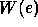
and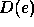
to refer to the work and depth of evaluating an expression e. In most cases the work and depth of an expression are the sums of the work and depth of the subexpressions. So, for example, if we have an expression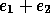
where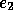
are subexpressions then the work of the expression is
where the 1 is the cost of the add. A similar rule is used for depth. The interesting rules concerning parallelism are the rules for an apply-to-each expression:
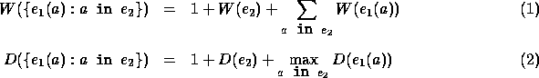
The first rule specifies that the work is the sum of the work of
each of the applications of  to , plus the work of
to , plus the work of  ,
plus 1 to account for overheads. The rule for depth is similar, but takes the
maximum of the depth of each application of . This supports our
intuition that the applications are executed in parallel and the
evaluation of the apply-to-each completes when the last call
completes. The other interesting rules are the rules
for an if expression, which for work is
,
plus 1 to account for overheads. The rule for depth is similar, but takes the
maximum of the depth of each application of . This supports our
intuition that the applications are executed in parallel and the
evaluation of the apply-to-each completes when the last call
completes. The other interesting rules are the rules
for an if expression, which for work is
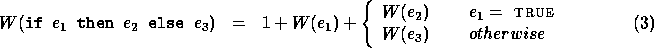
with a similar rule for depth. The work and depth for a function call and for scalar primitives are 1 each. The costs of the NESL functions on sequences are summarized in Figure 6. We note that the performance rules can be more precisely defined using an operational semantics [7].
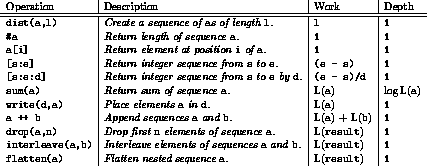
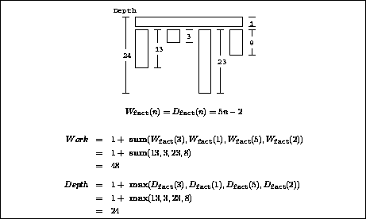
As an example of composing work and depth, consider evaluating the expression
{factorial(n) : n in a}
where a = [3,1,5,2]. Using the rules for work and the code for factorial given earlier, we can write the following equation for work:
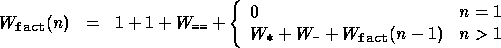
where
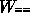
,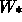
, and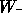
are the work for ==, *, and -, and are all 1. The two unit constants come from the cost of the function call and the if-then-else rule. Adding up the terms and solving the recurrence gives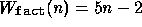
. Since there is no parallelism in the factorial function, the depth is the same as the work. To calculate work and depth for the full expression {factorial(n) : n in a} we can use equations 1 and 2. This calculation is shown in Figure 7.